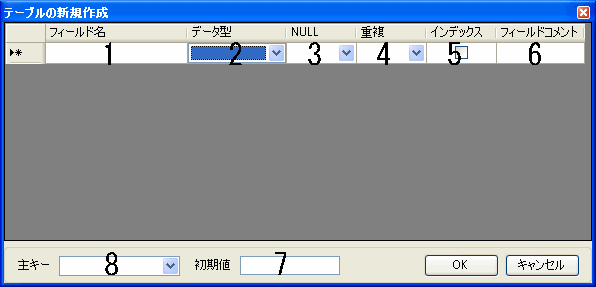

テーブルの新規作成時にフィールドの設定を行うウィンドウです。
テーブル名を入力します。. (ピリオド) ] (半角大カッコ)は使用できません。
データ型を指定します。SQLite3で使用可能なデータ型はこちらを参照してください。
NULLの可否を指定します。NULLが可能な場合は7の初期値ボックスに初期値を指定してください。
重複の可否を指定します。
インデックスを指定します。
フィールドのコメントを指定します。フィールドのコメントはデータグリッドウィンドウの下部に表示されます。
初期値を設定したいフィールドを選択後に入力すると設定が可能です。 フィールドを選択することで現在そのフィールドに設定されている初期値を確認・編集することができます。
現在設定されているフィールド一覧から主キーとするフィールドを選択します。
Copyright(C) 2008-2013 Pup All Rights Reserved.